Meet Blue! Our robot who learnt how to Navigate a Virtual environment
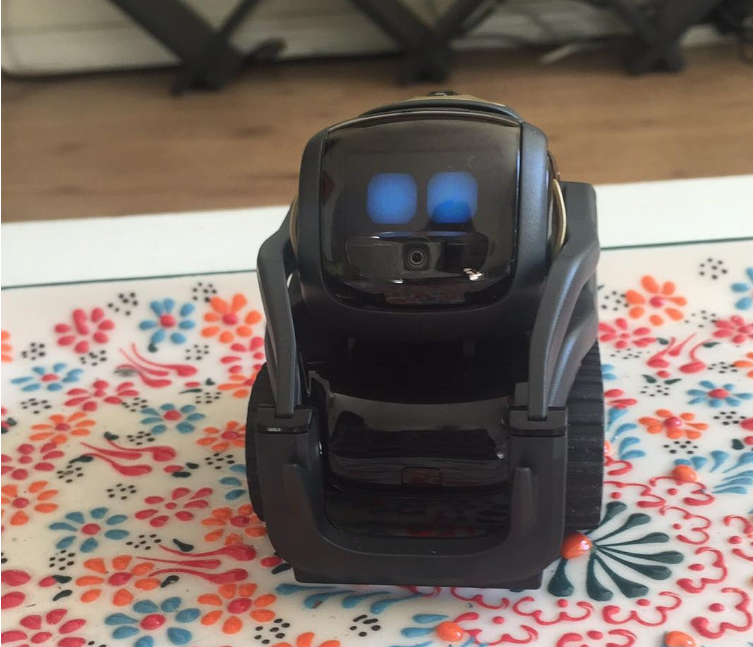
Backstory:
Within our ENPH 353, introduction to Machine Learning class, we were assigned to program a robot able to autonomously navigate a virtual environment track, and recognize and read license plates of what it encounters on its way. I took charge of the navigation, and character recognition, and my partner took charge of license plate detection.
This project gave me experience working with:
- Python
- Linux (ubuntu)
- OpenCV
- Tensorflow
- Gym-Gazebo
- ROS
- Anki
- Github
Navigation
Overview
We decided to use Q-Learning to enable the robot to follow the road and keep within the tracks. The goal is to keep the robot withing the white line boundaries, while also ensuring that a license plate box is within it’s vision. While a common implementation to get the state array of the robot is through it’s camera feed, I instead decided to subscribe to the position node to find the robot’s location in the gazebo environment. Then proceeded to map its position to a masked image of the track map to determine the state array
From the map, the state was determined through the three key pieces of information we could gather from its location. We wanted to know which section of the map the robot is in, where on the road the robot is, and which direction it is going. Our goal is for the robot to stay on the center of the road, while constantly moving forward.
Implementation
An overview of the process we used to assign the state of the robot is shown in the flow chart below. As seen, we begin by subscribing to get the ModelState of the robot. From here, we have information of the robot’s x,y,z positions, as well as its orientation angle, and its twist. Only the x and y position and the angle is used in our implementation.
After we obtain the x and y position of the robot, we want to know what that means on the map of the robot’s environment. To do this, I transformed those coordinates to a point on a masked image of the map. That masked image can then tell us more about the state of the robot. Specifically, we can know where on the road the robot is by assigning colors to each section of the road. We also want to know which section on the map the robot is located, and lastly its angle is also used in determining the state array.
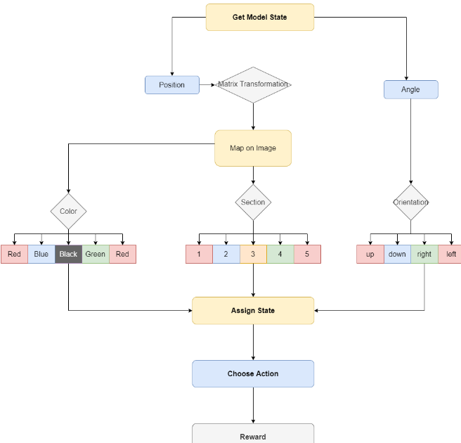
Obtaining State
By subscribing to the Model State, I could obtain the x and y coordinates of the robot. The next step upon that is to transform our coordinates into a point on the image of the map, and then have that point tell us the other information we 6 need to know through masking and image processing. Specifically, the information we use to determine the state array is:
- Color: Tells us robot’s position on road (too left, center, too right)
- Section of Map: Tells us robot’s position on Map
- Orientation: Tells us the direction the robot is facing
The orientation is given from the angle obtained from the ModelState, and the Color and Section are obtained by transforming the coordinates to locating pixel on a masked image of the map. I will first talk about the Transformation, and then about the Masking.
Transformation Matrix
Using a transformation matrix, I mapped the x and y coordinates given to us from its model state to its position on an image of the map. Ros gives its coordinates with reference to the center of the map, however when using OpenCV to perform image processing, it counts the pixels starting from the upper left corner. Also, the shape of the image in openCV is 863 × 863 pixels, and the map in the environment’s size is 2.9 × 2.9.
Therefore a transformation matrix is needed to map the exact location of the robot to a pixel on the image of the map. I added an offset from the Robot's center to get the nose of the robot instead, for more accurate results in its desired location.
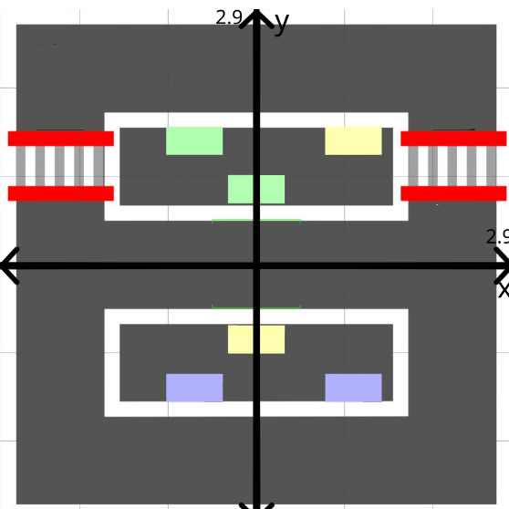
Original Coordinate System
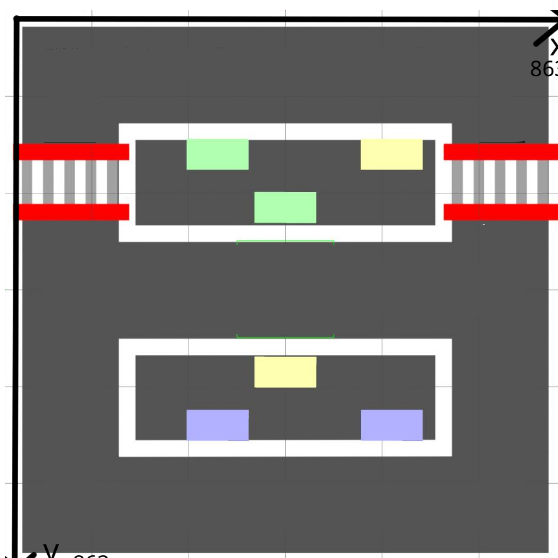
Coordinate System to use with OpenCV
Masking and Map processing
From the map, the state was determined through the three key pieces of information we could gather from its location. We wanted the robot to stay on the center of the road while progressing forward, so the first step was to mask our image to give use where on the road the robot was. To get this information, I masked the image using a color coding scheme to tell the robot whether it was too far left, too far right, or completely off the road.
Beginning with an image of the original map, and imagining the robot at its starting position and moving forward, I masked this image by sectioning off the road before the white railings into three different categories. The blue indicating the left side, the green indicating the right, and black being the center of the road.
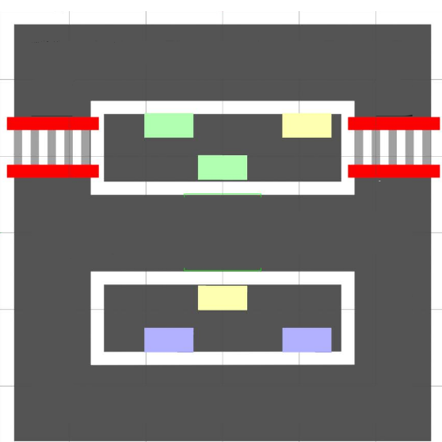
Original Map
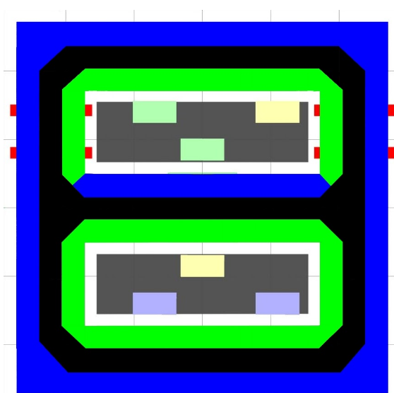
Initial Mask
Once we masked our image, we quickly realized that the color itself would not tell us enough about the state of the robot. As whether it is ”too right” or ”too left” is highly dependent on the section of the map, as well as its orientation. For example, if the robot started in its initial position, when going forward ”blue” would mean ”too left”, however, in that same position when going backward ”blue” would mean ”too right” - and you would need a different action depending on this state.
This is where sectioning the map and obtaining the orientation of the robot can help us get more information to which state the color should correspond to. I sectioned the Map into five different categories, based on the possible motions of the robot. Then, along with the orientation of the robot, we can now determine our state array with more accuracy. For example, say the robot is in section 1, and its orientation is that its facing to the left and moving forward. We now know that if the color is blue, it means the robot is too far to the left of the road, and if the color is green the robot is too far to the right of the road.
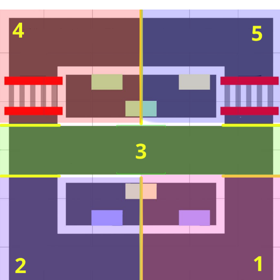
Sectioned Map
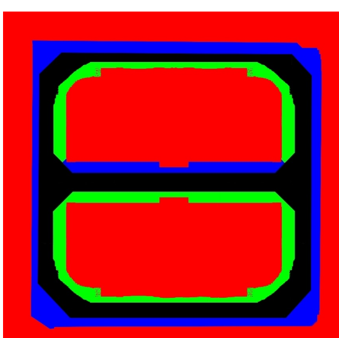
Final Mask
While training with this image however, the robot would find loopholes to where the unmasked parts of the image were. To combat this problem, I introduced a new state masked with red, which means the robot is either completely off the tracks, or close to being off the tracks. The green and the blue now only serve as indicators of its state before it turns to red and it starts to lose points.
Then, finally we could process our state into a single 5 entry state array, giving where the robot was on the road.
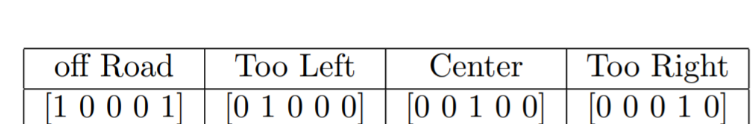
When doing this again however, to make the learning process more efficient, I want to change the state array to:
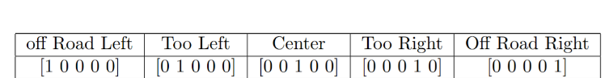
Action and Reward system
This section required the most testing while training to see how the robot learnt to do its intended goal. Following Lab06, I decided to make the highest penalty when the robot is completely off the road, or in the red state. However, since the 9 state array is based off location and not camera feed, if the robot increments only by twisting in z (turning right or left) by very small amounts, it would technically stay on the center of the road and be able to accumulate points without moving right or left. To combat this problem,I made it so even when it turns, it still has a small velocity in the +x direction - this way it wouldn’t be able to remain stagnant and only rotate incrementally to gain points. I also initially made the reward negative for turning, but larger than if it were to be on a red state, and the reward very high if it goes straight. The robot quickly learnt it only wants to be in the center of the road and drive forward, however, it was extremely resistant to turning when it hit corners and would get stuck at the wall before able to complete a turn. Then, I decided that it should gain points for turning if it was able to get itself out of a red state. The final decision on the reward system is:
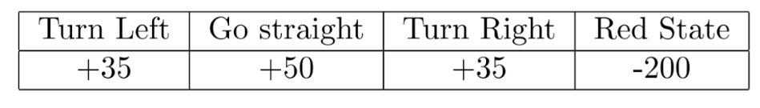
Results and Discussion
After a few hours of training, the farthest the robot was able to get to during a training session was section 4 of the map. A drawback is that it easily gets stuck in corners when it doesn’t choose to turn early enough. Re-masking the image might help to give the robot a smoother turning path, and also increasing the reward for turning. Another major drawback of this implementation as a whole is that it requires a highly accurate mask on the image revealing the robot’s state, since it is determined by one single pixel that the coordinates map to. I used the image processing software, Krita, to mask the image which gave some level of precision, but more time needs to go into deciding a more appropriate mask to make based on knowing where the robot is likely to get stuck, and the path we want him to take.
Here is the Github repo for the environment for Qlearning: https://github.com/kritika-joshi/bringing-anki-back/blob/sanj/competition_2019t2/competition_env.py
The gazebo environment: https://github.com/kritika-joshi/bringing-anki-back/blob/sanj/gazebo_competition_2019t2.py
Learning and choosing an action: https://github.com/kritika-joshi/bringing-anki-back/blob/sanj/qlearn.py
Here is a video of one of the robot's training sessions
Character Recognition
Overview:
For character recognition, we used the model Keras, imported from Tensorflow. Our raw images consisted of license plates, all of the same size, shape, and orientation.
The first step was to pre-process our data. As for our images, to train our model we needed to crop the image of a license plate from a string of characters, to cropped images consisting of only one character, and to get rid of the unnecessary parts of the image that did not contain a letter or a number. Since each image was the exact same shape and orientation, simple OpenCV cropping would do.
The next step was to convert our image into greyscale and then binary black and white, only holding onto the character itself. Then put all of these images into an array to call our xdata.
As for the Ydata, those were the labels to train our model with. We had to one-hot-encode them, and put them into an array as well.
Check out our github repository here for the the character recognition!: https://github.com/kritika-joshi/bringing-anki-back/blob/sanj/Lab%205%20real%20real%20real.ipynb